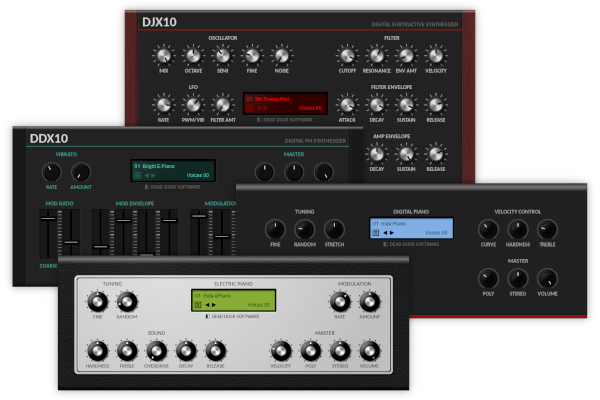

Navigation
next
previous
|
Dead Duck Software
»
Classic Instruments
Classic Instruments
¶

Contents
¶
Overview
Installation
Presets
Voices
DJX10 Synthesizer
Oscillator
Filter
LFO
Filter Envelope
Amp Envelope
Master
Credits
DDX10 Synthesizer
Vibrato
Mod Ratio
Mod Envelope
Modulator
Amp Envelope
Master
Credits
DPiano-A Digital Piano
Tuning
Sound
Velocity Control
Master
Credits
DPiano-E Electric Piano
Tuning
Sound
Modulation
Master
Credits
Table of Contents
Reducktion
Deducktion
Free Effects
Classic Instruments
Contents
Overview
DJX10 Synthesizer
DDX10 Synthesizer
DPiano-A Digital Piano
DPiano-E Electric Piano
Navigation
next
previous
|
Dead Duck Software
»
Classic Instruments